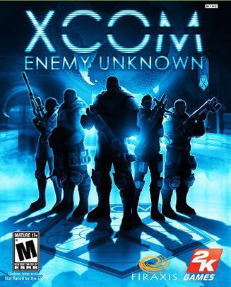
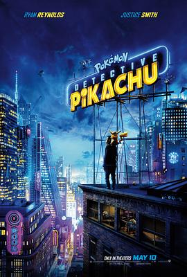
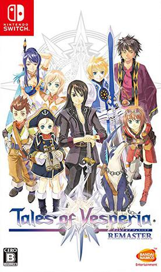
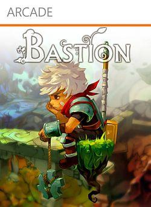
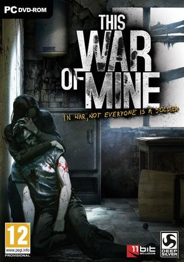
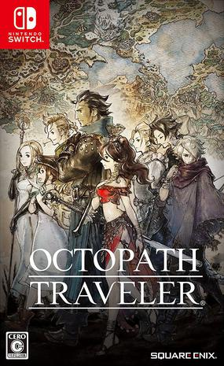

2018-11-24 19:08:51
豆瓣原页
看过 朝花夕誓 / さよならの朝に約束の花をかざろう ★★★★★
大概每个孩子都会有懂事的那一天吧。最开始感觉还挺一般，到最后泣不成声，想到了很多，很多。我才多大，怎会如此独愁善感。确实是产生共鸣了。用了好多纸，畅快淋漓，现在眼睛应该还是红的吧，嗨－－。致敬爱的父母
2018-11-19 19:07:57
豆瓣原页
看过 神奇动物：格林德沃之罪 / Fantastic Beasts: The Crimes of Grindelwald ★★★★☆
Newt和Tina在一起的bgm永远能赚取我的好评，其他一般吧，片尾下集预告差评
2018-11-18 14:47:49
豆瓣原页
听过 The Greatest Showman ★★★★★
2018-11-18 14:36:27
豆瓣原页

在玩 幽浮：未知敌人 XCOM: Enemy Unknown ★★★★★
最近看到Green Man Gaming AU$8 就可以拿到完整版，果断割草入了，Linux下原生可以玩非常棒，XCOM2好价前就拿这个过度了
2018-11-18 14:21:22
豆瓣原页
看过 马戏之王 / The Greatest Showman ★★★★★
太美了，歌声、舞蹈、剧情、、、也给我带了快乐
2018-11-16 21:25:37
豆瓣原页
看过 脉冲 第一季 / Impulse Season 1 ★★☆☆☆
前两集还真很有意思，设定十分喜欢，瞬间被圈粉，但是后面简直跟屎一样，结局更是让人失望。。。
2018-11-16 19:51:01
豆瓣原页
看过 垫底辣妹 / ビリギャル ★★★★★
很燃，很感人。回顾了一下高考，当时很累，可是我真的没有尽力，没有到我的极限，很有遗憾。搞IT比高考可能更累一些吧，我这种就是缺少社会的毒打。好在现在认识到了这一点，现在和以后做事情都一定尽力，绝不留遗憾。成长。 //最近工作越来越轻松，或许是变成老油条了吧，每天下午都是塞一下午耳机写代码，效率也还行，但是发现了不少好歌，最近无限单曲循环的是这首《手纸 ~拝啓 绪五の君へ~》，听了好有感触，想了很多，泪目。嗯，然后就想补一下这个电影
2018-11-14 05:34:03
豆瓣原页

想看 大侦探皮卡丘 / Pokémon Detective Pikachu
2018-11-11 06:43:24
豆瓣原页
想看 独立日3 Independence Day 3 (2019)
2018-11-10 21:10:42
豆瓣原页
看过 摇摆少女 / スウィングガールズ ★★★★☆
刚刚看完闪光少女，然后在短评区看到有人说和这部作品很想，于是就过来看一下。和音乐相关的剧情总是这么有趣啊，就是感觉剧情发展硬伤有点大，我感觉实际上并没有国产的闪光少女出彩。不过还是很有趣啊，主角和那个很有天赋的女生都好像我认识的人诶wwwww 十分亲切
2018-11-10 19:28:32
豆瓣原页
看过 闪光少女 ★★★★★
在油管看到了斗琴片段的推荐，然后就去找了这个电影，啊，对音乐体裁毫无抵抗力啊。本来想打5星的，但是二次元有点多余，还是减一星，算是强行迎合观众。不过话又说回来，女主的人设有点像栗山未来 _(:з)∠)_ 另外民乐团有一个叫女子十二乐坊的，作品也是十分好听!~ 算了，还是给5星，我刚刚只不过是想掩盖我不是二次元的事实。。。。
2018-11-10 19:20:30
豆瓣原页
看过 闪光少女 ★★★★☆
在油管看到了斗琴片段的推荐，然后就去找了这个电影，啊，对音乐体裁毫无抵抗力啊。本来想打5星的，但是二次元有点多余，还是减一星，算是强行迎合观众。不过话又说回来，女主的人设有点像栗山未来 _(:з)∠)_ 另外民乐团有一个叫女子十二乐坊的，作品也是十分好听!~
2018-11-08 20:04:07
豆瓣原页
看过 他其实没那么喜欢你 / He’s Just Not That Into You ★★★★☆
15年11月13日存在硬盘里的，三年后终于想起来看掉了，演员都是熟悉的面孔，剧情还算是贴近生活吧，也是一把辛酸泪
2018-11-06 22:20:48
豆瓣原页
看过 花与爱丽丝杀人事件 / 花とアリス殺人事件 ★★★★★
岩井俊二，难怪难怪，耳目一新，十分舒适，感觉十分微妙；主题曲满分
2018-11-04 17:01:05
豆瓣原页
想玩 仙剑奇侠传三外传 问情篇 仙劍奇俠傳三外傳 問情篇
有生之年去补完吧
2018-11-04 16:47:26
豆瓣原页
玩过 仙剑奇侠传三 仙劍奇俠傳三 ★★★★★
虽不及一代，但不乏出彩之处。五个结局全部通关~ （纪念土澳又tm断网！） //地图太难走了！！！//当时被3a大作惯的，仙3的3d完全没入眼，不过现在的机器也就只能跑跑这样的游戏了，评分还挺高的
2018-11-03 16:47:07
豆瓣原页
看过 死侍2：我爱我家 / Deadpool 2 ★★★★★
结局真是没想到，很不错啊很不错
2018-10-31 12:07:46
豆瓣原页
 想看 尽情游戏 / Micmacs à tire-larigot
想看 尽情游戏 / Micmacs à tire-larigot
2018-10-28 16:41:21
豆瓣原页
想看 刀剑神域 爱丽丝篇 / ソードアート・オンライン アリシゼーション
2018-10-28 16:41:17
豆瓣原页
想看 女神异闻录5 / ペルソナ5
2018-10-28 16:35:22
豆瓣原页
想看 刀剑神域外传 暴风之铳 / ソードアート・オンライン オルタナティブ ガンゲイル・オンライン
2018-10-28 16:35:10
豆瓣原页
想看 命运石之门0 / STEINS;GATE 0
2018-10-21 16:48:17
豆瓣原页
 看过 碟中谍6：全面瓦解 / Mission: Impossible - Fallout ★★★★★
看过 碟中谍6：全面瓦解 / Mission: Impossible - Fallout ★★★★★
画面场景比以前好看多了，选址nice！剧情ok，动作十分刺激
2018-10-21 12:17:22
豆瓣原页
想看 惊奇队长 / Captain Marvel
2018-10-20 16:35:49
豆瓣原页
1+ 条回复
看过 蚁人2：黄蜂女现身 / Ant-Man and the Wasp ★★★★★
太过瘾了，和第一部一样，期待下一部，末尾化成灰是怎么回事啊！
2018-10-20 09:36:28
豆瓣原页
想看 毒枭 第一季 / Narcos Season 1
2018-10-20 09:35:43
豆瓣原页
 想看 网络谜踪 / Searching
想看 网络谜踪 / Searching
2018-10-14 12:43:09
豆瓣原页
想玩 最后生还者 第二部 The Last of Us Part II
2018-10-14 12:35:37
豆瓣原页
玩过 最后生还者：遗落 The Last of Us: Left Behind ★★★★★
纯黑视频通关again，细节做得真是太好了，尤其是砸车玻璃和说笑话的部分
2018-10-13 15:37:44
豆瓣原页
2+ 条回复
看过 K歌情人 / Music and Lyrics ★★★★★
太感人了！！！！！！！！！！！！！！！！！！！！！！！！！！！！！！！！！！！！ //听到这个曲子Way Back Into Love (Demo)来搜的
2018-10-13 07:11:13
豆瓣原页
想看 城堡 / The Castle
2018-10-06 06:29:14
豆瓣原页
想看 马戏之王 / The Greatest Showman
2018-10-03 19:19:48
豆瓣原页
想看 垫底辣妹 / ビリギャル
最近工作越来越轻松，或许是变成老油条了吧，每天下午都是塞一下午耳机写代码，效率也还行，但是发现了不少好歌，最近无限单曲循环的是这首《手纸 ~拝啓 绪五の君へ~》，听了好有感触，想了很多，泪目。嗯，然后就想补一下这个电影
2018-10-01 10:03:34
豆瓣原页

想玩 薄暮传说：终极版 テイルズ オブ ヴェスペリア リマスター
Tales of Vesperia
2018-09-27 22:23:59
豆瓣原页
 玩过 古剑奇谭三：梦付千秋星垂野 ★★★★★
玩过 古剑奇谭三：梦付千秋星垂野 ★★★★★
在玩试玩版，总体来说10个开发人员能把这么大的游戏开发出来，游戏性肯定不能指望太高，然后打击感比较弱，操作挺别手，不过好歹在做出改变，这个得点赞。另外风晴雪串起来了，点赞！
2018-09-23 19:37:22
豆瓣原页
在看 西部世界 第一季 / Westworld Season 1
2018-09-23 19:35:53
豆瓣原页
1+ 条回复
玩过 少女们向荒野进发 少女たちは荒野を目指す ★★★☆☆
作为组长还是决定汉化弃坑了，这游戏小众得不得了，没人关注，文本还难懂，索性也就不汉化了，因此也就不打算玩了，体验版还是不错的，游戏引擎也还不错
2018-09-23 19:33:41
豆瓣原页

玩过 堡垒 Bastion ★★★★☆
手残啊手残，某一关又长又无法通过又无法跳过的话，那就只能珍爱生命卸载游戏了，画面还是很完美的
2018-09-23 19:32:08
豆瓣原页
玩过 梦游者 Back to Bed ★★★☆☆
不知道从哪领的游戏，本来用linux没啥可以玩的就玩了一下，结果发现和零几年的flash小游戏《梦游先生》一样，很有怀旧感啊
2018-09-23 19:29:37
豆瓣原页

玩过 这是我的战争 This War of Mine ★★★★★
题材本身就很有深度了，有历史背景，然后玩法完全取决于玩家，导致OCD玩家无比纠结该怎么玩 =。=
2018-09-23 19:24:40
豆瓣原页
想玩 XCOM2：世界新秩序
2018-09-23 19:24:30
豆瓣原页
想玩 幽浮：未知敌人 XCOM: Enemy Unknown
2018-09-20 21:22:07
豆瓣原页
想看 硅谷 第六季 / Silicon Valley Season 6
2018-09-20 21:21:49
豆瓣原页
 看过 硅谷 第五季 / Silicon Valley Season 5 ★★★★★
看过 硅谷 第五季 / Silicon Valley Season 5 ★★★★★
FUCK… YEAH!
2018-09-20 19:50:31
豆瓣原页
在看 硅谷 第五季 / Silicon Valley Season 5
2018-09-18 14:56:55
豆瓣原页
想看 猎魔人 第一季 / The Witcher Season 1
2018-09-18 06:27:59
豆瓣原页
想看 纸钞屋 第一季 / La casa de papel Season 1
2018-09-17 22:05:41
豆瓣原页
 想看 与神同行2：因与缘 / 신과함께-인과 연
想看 与神同行2：因与缘 / 신과함께-인과 연
2018-09-17 22:05:33
豆瓣原页
看过 与神同行：罪与罚 / 신과함께-죄와 벌 ★★★★★
一不小心在油管上看到了剧透，虽然已无兴致再看正片，但是仅凭剧透我觉得可以5星
2018-09-09 16:33:35
豆瓣原页
在玩 幽浮2 XCOM 2 ★★★★★
玩法和画面太棒了
2018-08-31 22:28:29
豆瓣原页
1+ 条回复
看过 看不见的客人 / Contratiempo ★★★★★
太精彩了！！！！！！！！！节奏把握的太完美了
2018-08-26 14:21:45
豆瓣原页
想看 蚁人2：黄蜂女现身 / Ant-Man and the Wasp
2018-08-18 19:13:23
豆瓣原页
想看 二十世纪电气目录 / 二十世紀電氣目録-ユーレカ・エヴリカ-
吹爆京阿尼
2018-08-18 07:27:43
豆瓣原页

想玩 歧路旅人 オクトパストラベラー
真的很有创意，很有兴趣
2018-08-15 19:15:47
豆瓣原页
看过 堕落天使 / 墮落天使 ★★★☆☆
不知道说了啥，感觉乱七八糟，镜头用的也没有美感，怎么拍出来这么混乱的一个电影，虽然男主女主都很好看
2018-08-11 23:50:55
豆瓣原页
看过 西虹市首富 ★★★★★
诶嘿，我挺喜欢这种类型的电影，挺开眼界+脑洞的噗
2018-08-04 11:40:42
豆瓣原页
看过 复仇者联盟3：无限战争 / Avengers: Infinity War ★★★★☆
依然是飞机上看的，不过结局出乎意料啊，竟然反派赢了，再看末尾，奥，预知后事如何请听下回分解
2018-08-04 11:37:06
豆瓣原页
2+ 条回复
看过 奇门遁甲 ★★☆☆☆
飞机上看到的，依然睡着了，电影是如何可以拍的这么无聊呢
2018-08-04 11:32:58
豆瓣原页
2+ 条回复
看过 敦刻尔克 / Dunkirk ★★★☆☆
没办法，战争片看着想睡觉（在飞机上）
2018-08-01 00:30:17
豆瓣原页
看过 陪读妈妈 ★★★★☆
除了设定比较狗血以外，剧情还不错，或许也是走了很极端的选材，我并没有多少感同身受，但是，嗯，加油吧。